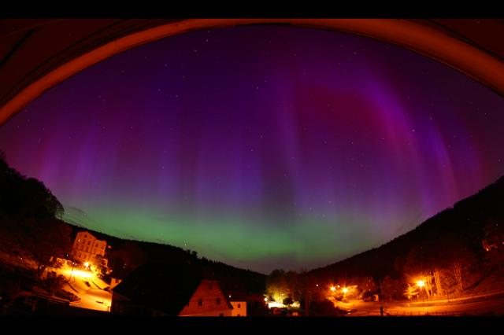
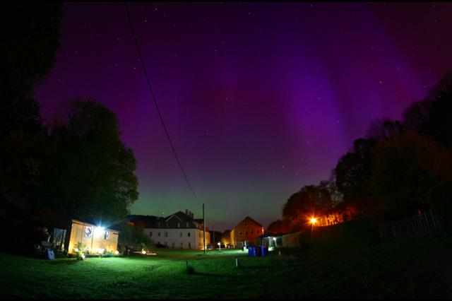
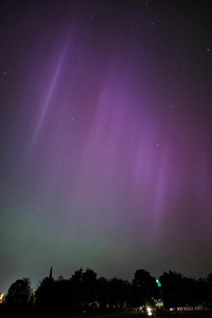

The northern lights, or aurora borealis, are one of nature’s most spectacular displays, often seen in the northern regions like Norway, Sweden, Finland, and Iceland. However, on a remarkable night in late May 2024, the celestial phenomenon made a rare appearance much farther south in central Europe, including parts of Germany.
A Notification That Sparked Excitement
It was around 1:00 AM on May 11, 2024, when I received a notification on my phone. It was a picture from my friend showing the most incredible view of the aurora borealis. At first, I thought it must be some kind of joke or an edited image. But as I groggily checked online, reports started flooding in—the northern lights were visible in Germany!
The wonderful show of aurora borealis, allowing the full spectrum of lights to be seen, was captured in many places across Central Europe. I could hardly believe my eyes. To see the northern lights this far south in central Europe is extremely rare. I quickly got dressed and rushed outside, my sleepiness replaced by a surge of adrenaline and excitement.

An Unforgettable Sight in the Night Sky
As I stepped outside, the dark night sky was pierced by ethereal, dancing beams of colored light. At first, I thought they might be spotlights from some event, but as I took some pictures on my phone’s night mode, the truth became clear - it was definitely the northern lights!
In the darker area, the northern lights showed up clearly on a perfect night with a clear sky and no moonlight. I hurried to a nearby park to get a better view away from the city lights. To my amazement, I wasn’t the only one - the park was filled with people, all of us in awe of this once-in-a-lifetime celestial event unfolding before our eyes. People gathered in a park in Dresden to witness and capture the rare appearance of the northern lights in the city.

A Moment to Remember
As I watched the shimmering curtains of green, purple, and red light dance across the night sky, I felt an overwhelming sense of wonder and appreciation for the beauty of our natural world. To be able to experience such a rare event, typically reserved for the higher latitudes, was truly special.
This incredible sighting of the northern lights in central Europe will surely go down as one of the most memorable nights of my life. It’s an experience I’ll cherish forever and a reminder to always keep an eye on the sky – you never know what amazing surprises nature might have in store.